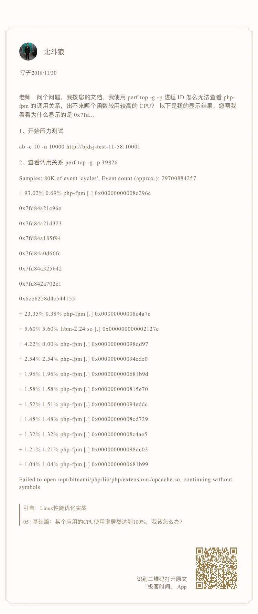
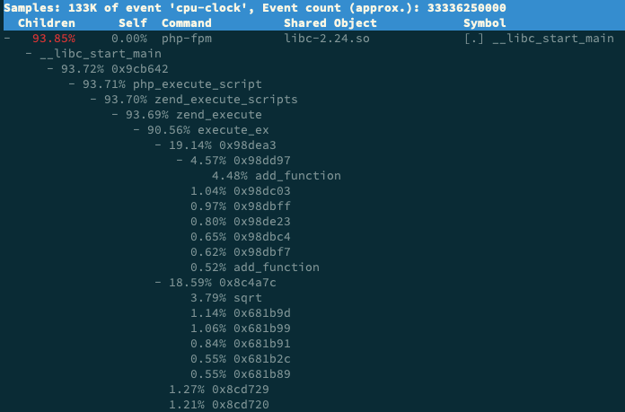

- 00 开篇词 别再让Linux性能问题成为你的绊脚石.md.html
- 01 如何学习Linux性能优化？.md.html
- 02 基础篇：到底应该怎么理解“平均负载”？.md.html
- 03 基础篇：经常说的 CPU 上下文切换是什么意思？（上）.md.html
- 04 基础篇：经常说的 CPU 上下文切换是什么意思？（下）.md.html
- 05 基础篇：某个应用的CPU使用率居然达到100%，我该怎么办？.md.html
- 06 案例篇：系统的 CPU 使用率很高，但为啥却找不到高 CPU 的应用？.md.html
- 07 案例篇：系统中出现大量不可中断进程和僵尸进程怎么办？（上）.md.html
- 08 案例篇：系统中出现大量不可中断进程和僵尸进程怎么办？（下）.md.html
- 09 基础篇：怎么理解Linux软中断？.md.html
- 10 案例篇：系统的软中断CPU使用率升高，我该怎么办？.md.html
- 11 套路篇：如何迅速分析出系统CPU的瓶颈在哪里？.md.html
- 12 套路篇：CPU 性能优化的几个思路.md.html
- 13 答疑（一）：无法模拟出 RES 中断的问题，怎么办？.md.html
- 14 答疑（二）：如何用perf工具分析Java程序？.md.html
- 15 基础篇：Linux内存是怎么工作的？.md.html
- 16 基础篇：怎么理解内存中的Buffer和Cache？.md.html
- 17 案例篇：如何利用系统缓存优化程序的运行效率？.md.html
- 18 案例篇：内存泄漏了，我该如何定位和处理？.md.html
- 19 案例篇：为什么系统的Swap变高了（上）.md.html
- 20 案例篇：为什么系统的Swap变高了？（下）.md.html
- 21 套路篇：如何“快准狠”找到系统内存的问题？.md.html
- 22 答疑（三）：文件系统与磁盘的区别是什么？.md.html
- 23 基础篇：Linux 文件系统是怎么工作的？.md.html
- 24 基础篇：Linux 磁盘I_O是怎么工作的（上）.md.html
- 25 基础篇：Linux 磁盘I_O是怎么工作的（下）.md.html
- 26 案例篇：如何找出狂打日志的“内鬼”？.md.html
- 27 案例篇：为什么我的磁盘I_O延迟很高？.md.html
- 28 案例篇：一个SQL查询要15秒，这是怎么回事？.md.html
- 29 案例篇：Redis响应严重延迟，如何解决？.md.html
- 30 套路篇：如何迅速分析出系统I_O的瓶颈在哪里？.md.html
- 31 套路篇：磁盘 I_O 性能优化的几个思路.md.html
- 32 答疑（四）：阻塞、非阻塞 I_O 与同步、异步 I_O 的区别和联系.md.html
- 33 关于 Linux 网络，你必须知道这些（上）.md.html
- 34 关于 Linux 网络，你必须知道这些（下）.md.html
- 35 基础篇：C10K 和 C1000K 回顾.md.html
- 36 套路篇：怎么评估系统的网络性能？.md.html
- 37 案例篇：DNS 解析时快时慢，我该怎么办？.md.html
- 38 案例篇：怎么使用 tcpdump 和 Wireshark 分析网络流量？.md.html
- 39 案例篇：怎么缓解 DDoS 攻击带来的性能下降问题？.md.html
- 40 案例篇：网络请求延迟变大了，我该怎么办？.md.html
- 41 案例篇：如何优化 NAT 性能？（上）.md.html
- 42 案例篇：如何优化 NAT 性能？（下）.md.html
- 43 套路篇：网络性能优化的几个思路（上）.md.html
- 44 套路篇：网络性能优化的几个思路（下）.md.html
- 45 答疑（五）：网络收发过程中，缓冲区位置在哪里？.md.html
- 46 案例篇：为什么应用容器化后，启动慢了很多？.md.html
- 47 案例篇：服务器总是时不时丢包，我该怎么办？（上）.md.html
- 48 案例篇：服务器总是时不时丢包，我该怎么办？（下）.md.html
- 49 案例篇：内核线程 CPU 利用率太高，我该怎么办？.md.html
- 50 案例篇：动态追踪怎么用？（上）.md.html
- 51 案例篇：动态追踪怎么用？（下）.md.html
- 52 案例篇：服务吞吐量下降很厉害，怎么分析？.md.html
- 53 套路篇：系统监控的综合思路.md.html
- 54 套路篇：应用监控的一般思路.md.html
- 55 套路篇：分析性能问题的一般步骤.md.html
- 56 套路篇：优化性能问题的一般方法.md.html
- 57 套路篇：Linux 性能工具速查.md.html
- 58 答疑（六）：容器冷启动如何性能分析？.md.html
- 加餐（一） 书单推荐：性能优化和Linux 系统原理.md.html
- 加餐（二） 书单推荐：网络原理和 Linux 内核实现.md.html
- 用户故事 “半路出家 ”，也要顺利拿下性能优化！.md.html
- 用户故事 运维和开发工程师们怎么说？.md.html
- 结束语 愿你攻克性能难关.md.html
- 捐赠
14 答疑（二）：如何用perf工具分析Java程序？
你好，我是倪朋飞。
今天是我们第二期答疑，这期答疑的主题是我们多次用到的perf工具，内容主要包括前面案例中， perf 使用方法的各种疑问。
perf 在性能分析中非常有效，是我们每个人都需要掌握的核心工具。perf 的使用方法也很丰富，不过不用担心，目前你只要会用 perf record 和 perf report 就够了。而对于 perf 显示的调用栈中的某些内核符号，如果你不理解也没有关系，可以暂时跳过，并不影响我们的分析。
同样的，为了便于你学习理解，它们并不是严格按照文章顺序排列的，如果你需要回顾内容原文，可以扫描每个问题右下方的二维码查看。
问题 1： 使用 perf 工具时，看到的是16进制地址而不是函数名

这也是留言比较多的一个问题，在 CentOS 系统中，使用 perf 工具看不到函数名，只能看到一些16进制格式的函数地址。
其实，只要你观察一下perf界面最下面的那一行，就会发现一个警告信息：
Failed to open /opt/bitnami/php/lib/php/extensions/opcache.so, continuing without symbols
这说明，perf 找不到待分析进程依赖的库。当然，实际上这个案例中有很多依赖库都找不到，只不过，perf工具本身只在最后一行显示警告信息，所以你只能看到这一条警告。
这个问题，其实也是在分析Docker容器应用时，我们经常碰到的一个问题，因为容器应用依赖的库都在镜像里面。
针对这种情况，我总结了下面四个解决方法。
第一个方法，在容器外面构建相同路径的依赖库。这种方法从原理上可行，但是我并不推荐，一方面是因为找出这些依赖库比较麻烦，更重要的是，构建这些路径，会污染容器主机的环境。
第二个方法，在容器内部运行 perf。不过，这需要容器运行在特权模式下，但实际的应用程序往往只以普通容器的方式运行。所以，容器内部一般没有权限执行 perf 分析。
比方说，如果你在普通容器内部运行 perf record ，你将会看到下面这个错误提示：
$ perf_4.9 record -a -g
perf_event_open(..., PERF_FLAG_FD_CLOEXEC) failed with unexpected error 1 (Operation not permitted)
perf_event_open(..., 0) failed unexpectedly with error 1 (Operation not permitted)
当然，其实你还可以通过配置 /proc/sys/kernel/perf_event_paranoid （比如改成-1），来允许非特权用户执行 perf 事件分析。
不过还是那句话，为了安全起见，这种方法我也不推荐。
第三个方法，指定符号路径为容器文件系统的路径。比如对于第05讲的应用，你可以执行下面这个命令：
$ mkdir /tmp/foo
$ PID=$(docker inspect --format {{.State.Pid}} phpfpm)
$ bindfs /proc/$PID/root /tmp/foo
$ perf report --symfs /tmp/foo
# 使用完成后不要忘记解除绑定
$ umount /tmp/foo/
不过这里要注意，bindfs 这个工具需要你额外安装。bindfs 的基本功能是实现目录绑定（类似于 mount –bind），这里需要你安装的是 1.13.10 版本（这也是它的最新发布版）。
如果你安装的是旧版本，你可以到 GitHub上面下载源码，然后编译安装。
第四个方法，在容器外面把分析纪录保存下来，再去容器里查看结果。这样，库和符号的路径也就都对了。
比如，你可以这么做。先运行 perf record -g -p < pid>，执行一会儿（比如15秒）后，按Ctrl+C停止。
然后，把生成的 perf.data 文件，拷贝到容器里面来分析：
$ docker cp perf.data phpfpm:/tmp
$ docker exec -i -t phpfpm bash
接下来，在容器的 bash 中继续运行下面的命令，安装 perf 并使用 perf report 查看报告：
$ cd /tmp/
$ apt-get update && apt-get install -y linux-tools linux-perf procps
$ perf_4.9 report
不过，这里也有两点需要你注意。
首先是perf工具的版本问题。在最后一步中，我们运行的工具是容器内部安装的版本 perf_4.9，而不是普通的 perf 命令。这是因为， perf 命令实际上是一个软连接，会跟内核的版本进行匹配，但镜像里安装的perf版本跟虚拟机的内核版本有可能并不一致。
另外，php-fpm 镜像是基于 Debian 系统的，所以安装 perf 工具的命令，跟 Ubuntu 也并不完全一样。比如， Ubuntu 上的安装方法是下面这样：
$ apt-get install -y linux-tools-common linux-tools-generic linux-tools-$(uname -r)）
而在 php-fpm 容器里，你应该执行下面的命令来安装 perf：
$ apt-get install -y linux-perf
当你按照前面这几种方法操作后，你就可以在容器内部看到 sqrt 的堆栈：

事实上，抛开我们的案例来说，即使是在非容器化的应用中，你也可能会碰到这个问题。假如你的应用程序在编译时，使用 strip 删除了ELF二进制文件的符号表，那么你同样也只能看到函数的地址。
现在的磁盘空间，其实已经足够大了。保留这些符号，虽然会导致编译后的文件变大，但对整个磁盘空间来说已经不是什么大问题。所以为了调试的方便，建议你还是把它们保留着。
顺便提一下，案例中各种工具的安装方法，可以算是我们专栏学习的基本功，这一点希望你能够熟悉并掌握。还是那句话，不会安装先查文档，还是不行就上网搜索或者在文章里留言提问。
在这里也要表扬一下，很多同学已经把摸索到的方法分享到了留言中。记录并分享，是一个很好的习惯。
问题 2：如何用perf工具分析Java程序

这两个问题，其实是上一个 perf 问题的延伸。 像是Java这种通过 JVM 来运行的应用程序，运行堆栈用的都是 JVM 内置的函数和堆栈管理。所以，从系统层面你只能看到JVM的函数堆栈，而不能直接得到Java应用程序的堆栈。
perf_events 实际上已经支持了 JIT，但还需要一个 /tmp/perf-PID.map文件，来进行符号翻译。当然，开源项目 perf-map-agent 可以帮你生成这个符号表。
此外，为了生成全部调用栈，你还需要开启JDK的选项 -XX:+PreserveFramePointer。因为这里涉及到大量的 Java 知识，我就不再详细展开了。如果你的应用刚好基于 Java ，那么你可以参考 Netflix 的技术博客 Java in Flames ，来查看详细的使用步骤。
说到这里，我也想强调一个问题，那就是学习性能优化时，不要一开始就把自己限定在具体的某个编程语言或者性能工具中，纠结于语言或工具的细节出不来。
掌握整体的分析思路，才是我们首先要做的。因为，性能优化的原理和思路，在任何编程语言中都是相通的。
问题 3：为什么 perf 的报告中，很多符号都不显示调用栈
perf report 是一个可视化展示 perf.data 的工具。在第 08 讲的案例中，我直接给出了最终结果，并没有详细介绍它的参数。估计很多同学的机器在运行时，都碰到了跟路过同学一样的问题，看到的是下面这个界面。
这个界面可以清楚看到，perf report 的输出中，只有 swapper 显示了调用栈，其他所有符号都不能查看堆栈情况，包括我们案例中的 app 应用。
这种情况我们以前也遇到过，当你发现性能工具的输出无法理解时，应该怎么办呢？当然还是查工具的手册。比如，你可以执行 man perf-report 命令，找到 -g 参数的说明：
-g, --call-graph=<print_type,threshold[,print_limit],order,sort_key[,branch],value>
Display call chains using type, min percent threshold, print limit, call order, sort key, optional branch and value. Note that
ordering is not fixed so any parameter can be given in an arbitrary order. One exception is the print_limit which should be
preceded by threshold.
print_type can be either:
- flat: single column, linear exposure of call chains.
- graph: use a graph tree, displaying absolute overhead rates. (default)
- fractal: like graph, but displays relative rates. Each branch of
the tree is considered as a new profiled object.
- folded: call chains are displayed in a line, separated by semicolons
- none: disable call chain display.
threshold is a percentage value which specifies a minimum percent to be
included in the output call graph. Default is 0.5 (%).
print_limit is only applied when stdio interface is used. It's to limit
number of call graph entries in a single hist entry. Note that it needs
to be given after threshold (but not necessarily consecutive).
Default is 0 (unlimited).
order can be either:
- callee: callee based call graph.
- caller: inverted caller based call graph.
Default is 'caller' when --children is used, otherwise 'callee'.
sort_key can be:
- function: compare on functions (default)
- address: compare on individual code addresses
- srcline: compare on source filename and line number
branch can be:
- branch: include last branch information in callgraph when available.
Usually more convenient to use --branch-history for this.
value can be:
- percent: diplay overhead percent (default)
- period: display event period
- count: display event count
通过这个说明可以看到，-g 选项等同于 –call-graph，它的参数是后面那些被逗号隔开的选项，意思分别是输出类型、最小阈值、输出限制、排序方法、排序关键词、分支以及值的类型。
我们可以看到，这里默认的参数是 graph,0.5,caller,function,percent，具体含义文档中都有详细讲解，这里我就不再重复了。
现在再回过头来看我们的问题，堆栈显示不全，相关的参数当然就是最小阈值 threshold。通过手册中对threshold的说明，我们知道，当一个事件发生比例高于这个阈值时，它的调用栈才会显示出来。
threshold 的默认值为 0.5%，也就是说，事件比例超过 0.5%时，调用栈才能被显示。再观察我们案例应用 app 的事件比例，只有 0.34%，低于 0.5%，所以看不到 app 的调用栈就很正常了。
这种情况下，你只需要给 perf report 设置一个小于 0.34% 的阈值，就可以显示我们想看到的调用图了。比如执行下面的命令：
$ perf report -g graph,0.3
你就可以得到下面这个新的输出界面，展开 app 后，就可以看到它的调用栈了。
问题 4：怎么理解 perf report 报告

看到这里，我估计你也曾嘀咕过，为啥不一上来就用 perf 工具解决，还要执行那么多其他工具呢？ 这个问题其实就给出了很好的解释。
在问题4的perf report 界面中，你也一定注意到了， swapper 高达 99% 的比例。直觉来说，我们应该直接观察它才对，为什么没那么做呢？
其实，当你清楚了 swapper 的原理后，就很容易理解我们为什么可以忽略它了。
看到swapper，你可能首先想到的是SWAP分区。实际上， swapper 跟 SWAP 没有任何关系，它只在系统初始化时创建 init 进程，之后，它就成了一个最低优先级的空闲任务。也就是说，当 CPU 上没有其他任务运行时，就会执行swapper 。所以，你可以称它为“空闲任务”。
回到我们的问题，在 perf report 的界面中，展开它的调用栈，你会看到， swapper 时钟事件都耗费在了 do_idle 上，也就是在执行空闲任务。
所以，分析案例时，我们直接忽略了前面这个 99% 的符号，转而分析后面只有 0.3% 的 app。其实从这里你也能理解，为什么我们一开始不先用 perf 分析。
因为在多任务系统中，次数多的事件，不一定就是性能瓶颈。所以，只观察到一个大数值，并不能说明什么问题。具体有没有瓶颈，还需要你观测多个方面的多个指标，来交叉验证。这也是我在套路篇中不断强调的一点。
另外，关于 Children 和 Self 的含义，手册里其实有详细说明，还很友好地举了一个例子，来说明它们的百分比的计算方法。简单来说，
Self 是最后一列的符号（可以理解为函数）本身所占比例；
Children 是这个符号调用的其他符号（可以理解为子函数，包括直接和间接调用）占用的比例之和。
正如同学留言问到的，很多性能工具确实会对系统性能有一定影响。就拿 perf 来说，它需要在内核中跟踪内核栈的各种事件，那么不可避免就会带来一定的性能损失。这一点，虽然对大部分应用来说，没有太大影响，但对特定的某些应用（比如那些对时钟周期特别敏感的应用），可能就是灾难了。
所以，使用性能工具时，确实应该考虑工具本身对系统性能的影响。而这种情况，就需要你了解这些工具的原理。比如，
perf 这种动态追踪工具，会给系统带来一定的性能损失。
vmstat、pidstat 这些直接读取 proc 文件系统来获取指标的工具，不会带来性能损失。
问题 5：性能优化书籍和参考资料推荐
我很高兴看到留言有这么高的学习热情，其实好多文章后面都有大量留言，希望我能推荐书籍和学习资料。这一点也是我乐意看到的。专栏学习一定不是你性能优化之旅的全部，能够带你入门、帮你解决实际问题、甚至是激发你的学习热情，已经让我非常开心。
在 如何学习Linux性能优化 的文章中，我曾经介绍过 Brendan Gregg，他是当之无愧的性能优化大师，你在各种 Linux 性能优化的文章中，基本都能看到他的那张性能工具图谱。
所以，关于性能优化的书籍，我最喜欢的其实正是他写的那本 《Systems Performance: Enterprise and the Cloud》。这本书也出了中文版，名字是《性能之巅：洞悉系统、企业与云计算》。
从出版时间来看，这本书确实算一本老书了，英文版的是 2013 年出版的。但是经典之所以成为经典，正是因为不会过时。这本书里的性能分析思路以及很多的性能工具，到今天依然适用。
另外，我也推荐你去关注他的个人网站 http://www.brendangregg.com/，特别是 Linux Performance 这个页面，包含了很多 Linux 性能优化的资料，比如：
Linux性能工具图谱 ；
性能分析参考资料；
性能优化的演讲视频 。
不过，这里很多内容会涉及到大量的内核知识，对初学者来说并不友好。但是，如果你想成为高手，辛苦和坚持都是不可避免的。所以，希望你在查看这些资料时，不要一遇到不懂的就打退堂鼓。任何东西的第一遍学习有不懂的地方很正常，忍住恐惧别放弃，继续往后走，前面很多问题可能会一并解决掉，再看第二遍、第三遍就更轻松了。
还是那句话，抓住主线不动摇，先从最基本的原理开始，掌握性能分析的思路，然后再逐步深入，探究细节，不要试图一口吃成个大胖子。
最后，欢迎继续在留言区写下你的疑问，我会持续不断地解答。我的目的仍然不变，希望可以和你一起，把文章的知识变成你的能力，我们不仅仅在实战中演练，也要在交流中进步。
© 2019 - 2023 Liangliang Lee. Powered by gin and hexo-theme-book.